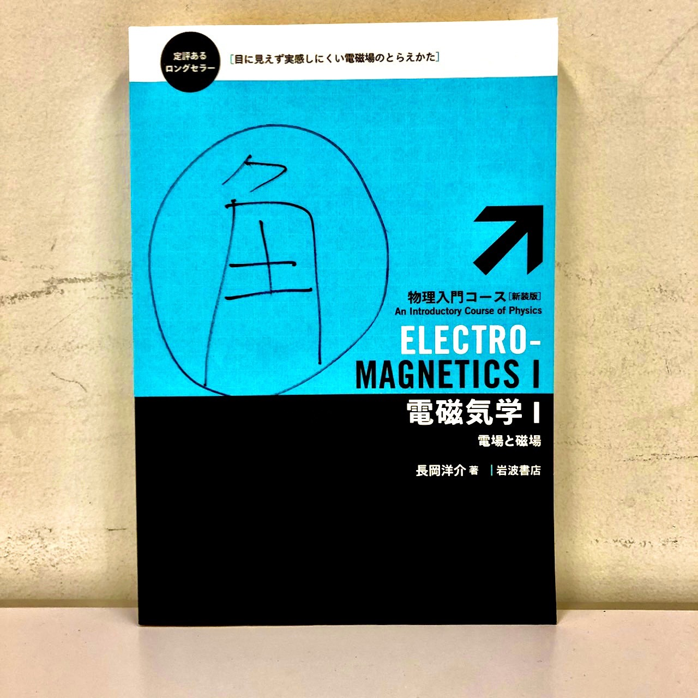
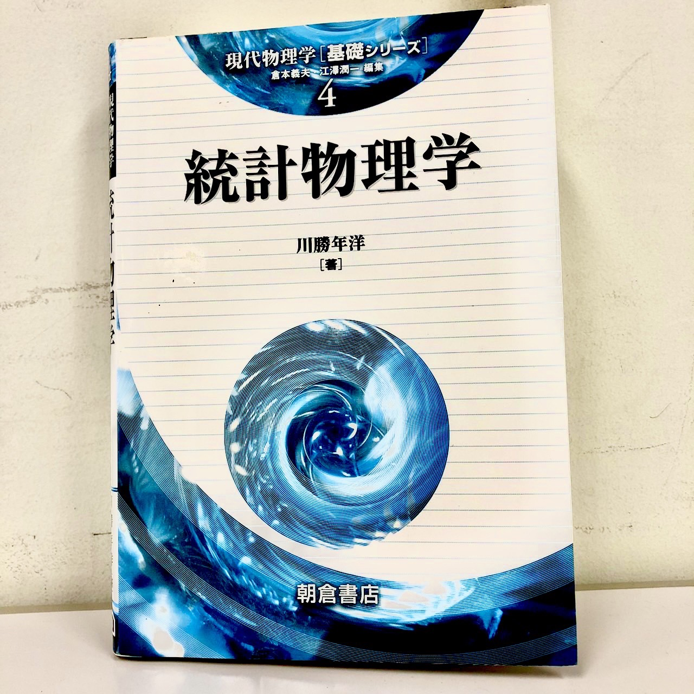
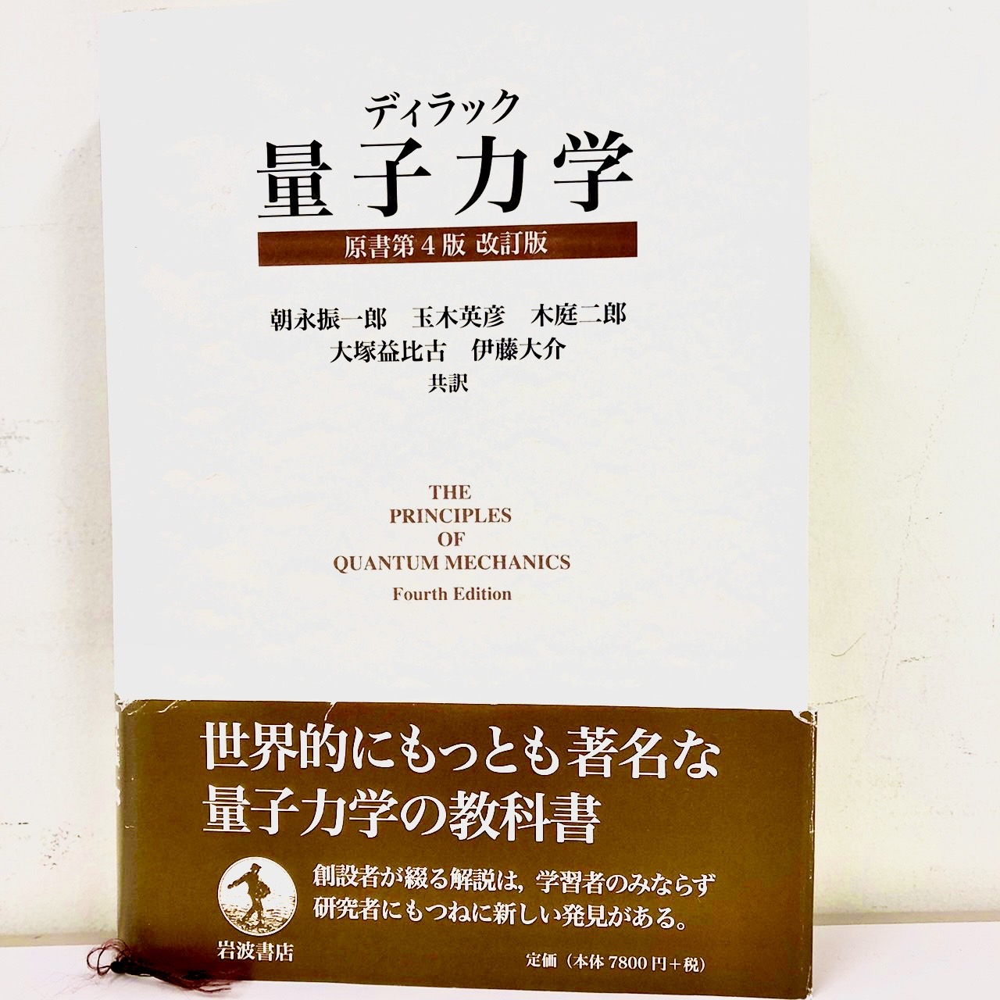
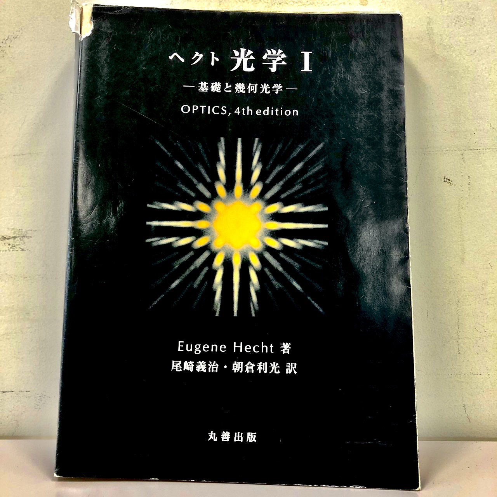
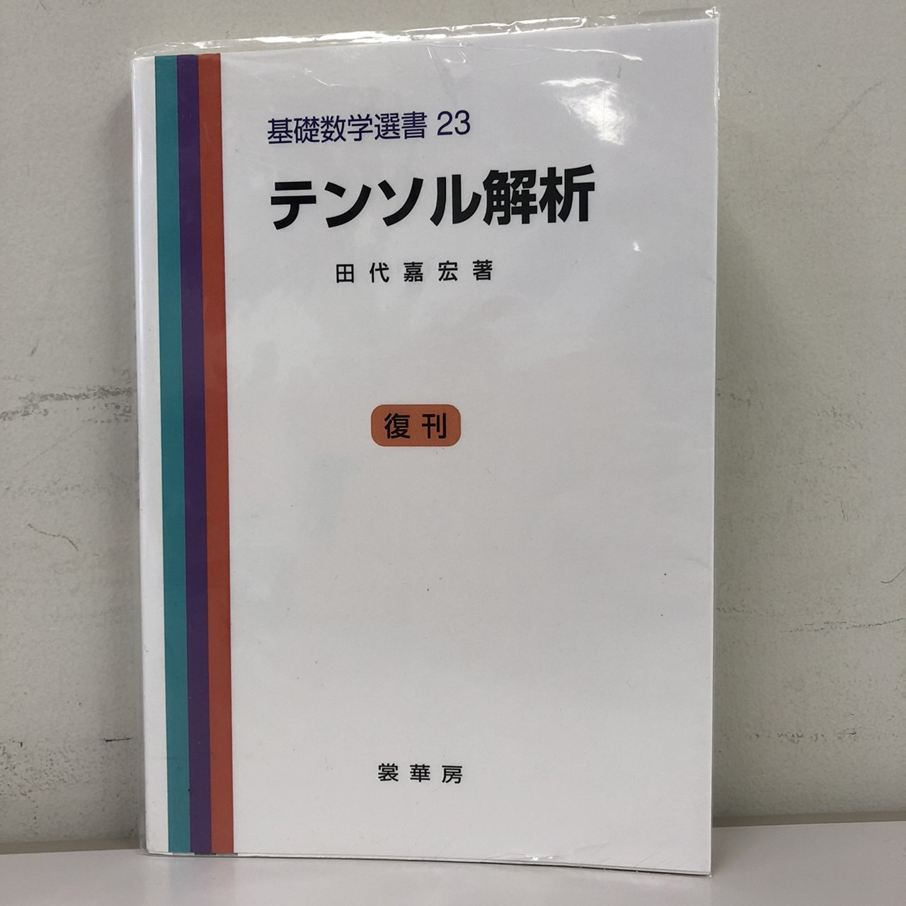
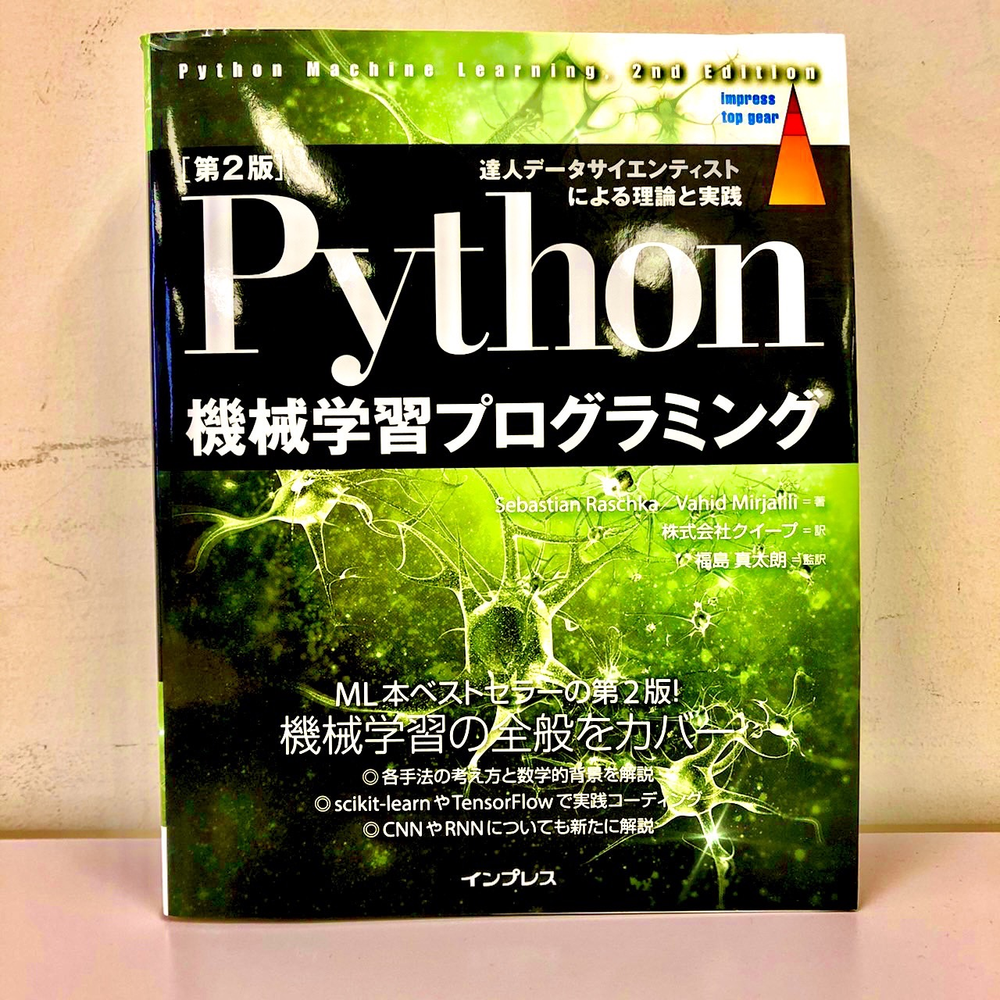
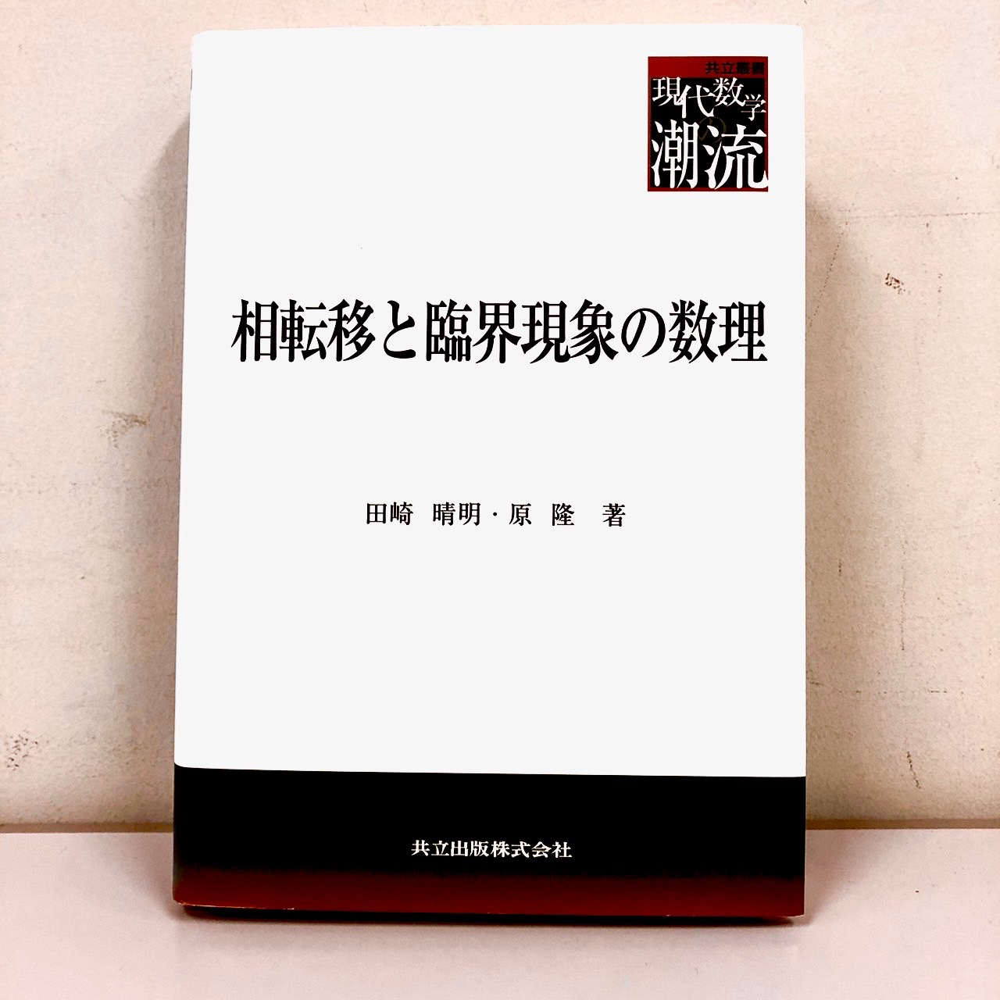

角部屋文庫
2022年3月24日現在
角部屋の蔵書一覧
-
- 力学
- 一回生で履修する力学に関する本を多数取り揃えています。
-

- 電磁気学
- 理論電磁気学をはじめとして難しめの本や読みやすい本を多数取り揃えています。
-

- 熱力学・統計力学
- 2回生から履修する熱力学や統計力学に関する本を取り揃えています。
-

- 量子力学
- 木の枝やガーデンに吊るして、害虫を捕獲します。底に果実などを入れて使います。
-
- 宇宙論・相対論
- 特殊相対性理論や一般相対性理論、宇宙論に関する本を取り揃えています。
-

- 光学
- ヘクト光学I,II,IIIなどを置いています。
-
- 固体物理学
- キッテル固体物理学やその演習書などを置いています。
-

- 数学
- 微積分や線形代数、他にも様々な内容の本を取り揃えています。
-

- プログラミング
- データサイエンスに関する本やその他シミュレーションに関する本などもあります。
-
- 英語
- 英語で物理を学べる本などもあります。
-
- その他
- 連続体力学や流体力学、共形場理論に関する本などもあります。
-

- 最近入荷した本
- ここでは3ヶ月以内に入荷した本を紹介しています。